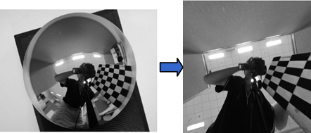
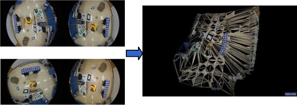
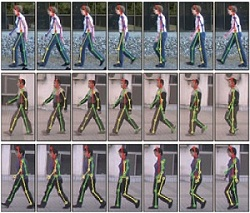

Research
Human Motion Tracking Human motion tracking is important for computer graphics and human-computer interactions. Most existing systems still heavily rely on user interactions to postprocess the motion data. We devote our efforts to working towards the goal of automatic capture of acurate 3D human motions from using low-cost sensors and cameras. |
|
 |
Automatic Gait Motion Capture with Missing-marker Fillings We propose a new gait motion tracking and marker filling method in passive optical motion capture. Our method can identify body markers automatically. For missing markers, our method can set up a filling candidate set with available rigid body constraints, and then reliably identify the missing markers from the candidate sets. The method is automatic and an online algorithm, which requires no user interaction once the algorithm starts. |
Camera Calibration and 3D Reconstruction Realistic 3D models are of great importance for many applications such as film special effect, video games and robotics. 3D reconstruction from multiple images is the creation of three dimensional models from a set of images. It is the reverse process of obtaining 2D images from 3D scenes. Camera calibration is the process of estimating the parameters of a camera model approximating the camera that produced a given photograph or video, and it is essential for 3D reconstrunction. |
|
|
  |
Omnidirectional Vision Omnidirectional cameras (catadioptric, fisheye) have the prominent property of wide view angle. However, it is challenging for use due to the heavy distortion in the omnidirectional images. We introduce a polynomial model for central catadioptric camera, and apply it in calibration with 1D and 2D objects, self-calibration of hybrid camera system. We apply them in indoor 3D reconstruction, panoroma stitching, and optical motion capture. |
Data-driven Image and Motion Synthesis Data-driven approaches is very effective for solving ill-posed vision problems, such as image synthesis and vision-based motion tracking. |
|
|  | Monocular Human Pose Estimation We proposed a method to recover human pose from monocular videos.
Our approach learns a series of local prior models from a set of human pose examples.
These local models express the prior knowledge about the pose to be recovered as time-varying probability densities and temporal
conditionals. The image likelihood is evaluated by matching a deformable 2D human body model to the input images.
The local models and the image likelihood are integrated to optimize the pose for the current input. |
(This web page last updated on Nov. 2013.)